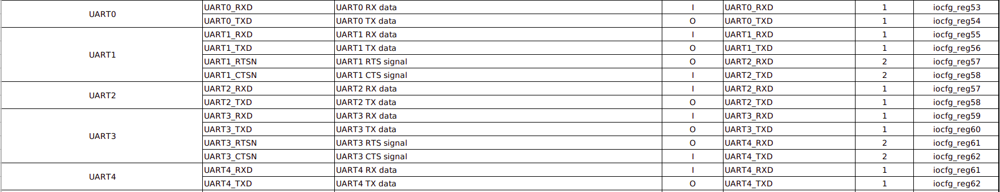
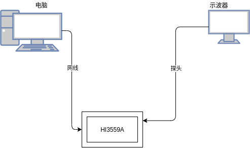

shuixia03-liteos-gpio
[TOC]
一、概述
HI3559A芯片的CPU子系统分为两部分，一个是以为A73+A53为主的SOC部分，另一个是为M7为主的Sensor Hub部分，其中SOC子系统与Sensor Hub子系统的外设均采用统一的外设接口，即寄存器组完全一样，并且可以通过地址转换实现跨子系统访问，但是SOC子系统与Sensor Hub子系统的中断系统完全肚子，并不能完全共享中断向量。
主 SOC 子系统支持 19 组 GPIO（General Purpose Input/Output），即 GPIO0～GPIO18。每组 GPIO 提供 8 个可编程的输入输出管脚（GPIO18 只有 4 个）。
Sensor Hub 子系统支持 5 组 GPIO，即 GPIO0~GPIO4。每组 GPIO 提供 8 个可编程的输入输出管脚（GPIO4 只有 2 个）。 每个管脚可以配置为输入或者输出。这些管脚用于生成特定应用的输出信号或采集特定应用的输入信号。作为输入管脚时，GPIO 可作为中断源；作为输出管脚时，每个GPIO 都可以独立地清 0 或置 1。
该文档就GPIO的操作使用以及GPIO的复用功能做详细讲解。
二、 参考文件
GPIO复用功能描述文件《Hi3559A V100_PINOUT_EN.xlsx》
驱动操作使用指南《外围设备驱动 操作指南.pdf》
寄存器相关操作《Hi3559A╱C V100 ultra-HD Mobile Camera SoC 用户指南.pdf》
三、驱动编译
1. 官方GPIO驱动编译
海思官方提供的程序兼容posix接口，实现了部分函数功能，gpio相关的驱动程序源码路径为 drivers/gpio，在编译脚本里指定源码路径与头文件路径，编译成功后，out目录下会生成名为 libgpio.a 的库文件，链接时通过-lgpio 指定对应库文件。
海思官方提供的API函数如下：
-
gpio_chip_init：GPIO 初始化接口。
-
gpio_chip_deinit：GPIO 去初始化接口。
-
gpio_get_direction：获取 GPIO 方向。
-
gpio_direction_input：设置 GPIO 方向为输入。
-
gpio_direction_output：设置 GPIO 方向为输出。
-
gpio_get_value：获取 GPIO 值。
-
gpio_set_value：设置 GPIO 值。
-
gpio_irq_register：注册 GPIO 中断。
-
gpio_set_irq_type：设置 GPIO 中断类型。
-
gpio_irq_enable：使能 GPIO 中断。
-
gpio_get_irq_status：获取中断状态。
-
gpio_clear_irq：清除 GPIO 寄存器中断状态。
但是在posix接口部分只提供了open()，close()，ioctl()函数，因此下面就该部分代码做一定的解读。
#include "fcntl.h"
#include "linux/kernel.h"
#include "fs/fs.h"
#include "sys/ioctl.h"
#include "gpio.h"
#include "gpio_dev.h"
struct gpio_descriptor *gpio = NULL;
static int gpio_open(struct file *filep)
{
return 0;
}
static int gpio_close(struct file *filep)
{
return 0;
}
static int gpio_ioctl(struct file *filep, int cmd, unsigned long arg)
{
int ret = 0;
struct inode * inode = filep ->f_inode;
struct gpio_descriptor *gd = (struct gpio_descriptor *)(inode->i_private);
if(!gd)
{
gpio_err("gpio_descriptor is null!\n");
return -1;
}
switch(cmd)
{
case GPIO_SET_DIR:
if(gd->ops->setdir)
ret = gd->ops->setdir(gd,(gpio_groupbit_info*)arg);
else
ret = -1;
break;
case GPIO_GET_DIR:
if(gd->ops->getdir)
ret = gd->ops->getdir(gd,(gpio_groupbit_info*)arg);
else
ret = -1;
break;
case GPIO_READ_BIT:
if(gd->ops->readbit)
ret = gd->ops->readbit(gd,(gpio_groupbit_info*)arg);
else
ret = -1;
break;
case GPIO_WRITE_BIT:
if(gd->ops->writebit)
ret = gd->ops->writebit(gd,(gpio_groupbit_info*)arg);
else
ret = -1;
break;
default:
ret = -1;
}
return ret;
}
const struct file_operations_vfs gpio_dev_ops =
{
gpio_open, /* open */
gpio_close, /* close */
0, /* read */
0, /* write */
0, /* seek */
gpio_ioctl /* ioctl */
#ifndef CONFIG_DISABLE_POLL
, 0 /* poll */
#endif
};
如上述代码所示：posix驱动部分只实现了open()，close()，ioctl()函数，其中open()，close()函数未做任何操作，ioctl()支持GPIO_SET_DIR，GPIO_GET_DIR，GPIO_READ_BIT，GPIO_WRITE_BIT等操作。
在liteos代码目录下直接执行make便可以实现该部分代码的编译。
2.GPIO复用功能拓展
GPIO除了设计为GPIO功能之外，有时候还会设计为其他功能，例如uart，spi，PWM等，因此根据实际情况，可以选择使用作为第二功能。该部分寄存器位于《Hi3559A V100_PINOUT_EN.xlsx》中。

新建hal_gpioaf.c，hal_gpioaf.h。
hal_gpioaf.h
#ifndef __HAL_GPIOAF_H__
#define __HAL_GPIOAF_H__
#include "hal.h"
#define IOREGL(N) (0x1F000000 + N * 4)
#define IOREGM(N) (0x1F001000 + (N - 76) * 4)
#define IOREGH(N) (0x1F002000 + (N - 138) * 4)
#define IOREG(N) (N <= 75 ? IOREGL(N): IOREGM(N))
#define AF_UART0_VAL 0x01
#define AF_UART0_TX IOREG(53)
#define AF_UART0_RX IOREG(54)
#define AF_UART1_VAL 0x01
#define AF_UART1_TX IOREG(55)
#define AF_UART1_RX IOREG(56)
#define AF_UART2_VAL 0x01
#define AF_UART2_TX IOREG(57)
#define AF_UART2_RX IOREG(58)
#define AF_UART3_VAL 0x01
#define AF_UART3_TX IOREG(59)
#define AF_UART3_RX IOREG(60)
#define AF_UART4_VAL 0x01
#define AF_UART4_TX IOREG(61)
#define AF_UART4_RX IOREG(62)
#define AF_UARTO_Config() { \
writeor(AF_UART0_TX, AF_UART0_VAL); \
writeor(AF_UART0_RX, AF_UART0_VAL); \
}
#define AF_UART1_Config() { \
writeor(AF_UART1_TX, AF_UART1_VAL); \
writeor(AF_UART1_RX, AF_UART1_VAL); \
}
#define AF_UART2_Config() { \
writeor(AF_UART2_TX, AF_UART2_VAL); \
writeor(AF_UART2_RX, AF_UART2_VAL); \
}
#define AF_UART3_Config() { \
writeor(AF_UART3_TX, AF_UART3_VAL); \
writeor(AF_UART3_RX, AF_UART3_VAL); \
}
#define AF_UART4_Config() { \
writeor(AF_UART4_TX, AF_UART4_VAL); \
writeor(AF_UART4_RX, AF_UART4_VAL); \
}
#endif
上述代码中实现了UART部分的gpio复用功能，如需要实现其他功能的IO复用，可以类似于上述代码编写IO复用函数。
四、 API描述
1. 官方GPIO驱动API
官方提供的posix接口只提供了ioctl函数，其中open，close函数的函数内容均为空，因此仅需要分析ioctl函数即可，ioctl()支持GPIO_SET_DIR，GPIO_GET_DIR，GPIO_READ_BIT，GPIO_WRITE_BIT等操作。
ioctl可配置参数如下：
| 命令号 | 命令码 | 参数 | 说明 |
|---|---|---|---|
| GPIO_SET_DIR | 4 | GPIO结构体 | 设置一个GPIO的方向 |
| GPIO_GET_DIR | 5 | GPIO结构体 | 获取一个GPIO的设置方向 |
| GPIO_READ_BIT | 6 | GPIO结构体 | 读取一个GPIO的电平值 |
| GPIO_WRITE_BIT | 7 | GPIO结构体 | 设置一个GPIO的电平值 |
2.GPIO复用功能拓展
上述的GPIO复用功能拓展提供了五个GPIO函数，如果使用有需要，可以进一步编写相关的代码以实现更多设备的GPIO复用功能支持，上述代码支持的函数如下：
AF_UARTO_Config() //设置相应的GPIO复用功能为UART0
AF_UART1_Config() //设置相应的GPIO复用功能为UART1
AF_UART2_Config() //设置相应的GPIO复用功能为UART2
AF_UART3_Config() //设置相应的GPIO复用功能为UART3
AF_UART4_Config() //设置相应的GPIO复用功能为UART4
五、 应用实例
1.官方GPIO驱动实例

如上图所示：电脑通过网线连接HI3559A板卡，实现程序的烧写与调试，示波器通过探头连接到HI3559A的GPIO上，通过程序设置GPIO的输出电平，在示波器上观察IO点评的变化。
其中gpio_dev_init在liteos初始化时候便已经被调用了，因此使用上述代码只需要执行oepn，ioctl，close等函数，如上分析，新建user_gpio.c、user_gpio.h。
user_gpio.h
#ifndef __USER_GPIO_H__
#define __USER_GPIO_H__
#include "user.h"
#include "gpio.h"
void user_gpio_initial(void);
#endif
user_gpio.c
#include "user_gpio.h"
#include "gpio.h"
int fd;
void user_gpio_initial(void){
fd = open("/dev/gpio", O_RDWR);
gpio_groupbit_info group_bit_info;
group_bit_info.groupnumber = 3;
group_bit_info.bitnumber = 6;
group_bit_info.direction = GPIO_DIR_OUT;
ioctl(fd, GPIO_SET_DIR, &group_bit_info);
while(1){
LOS_Msleep(10);
group_bit_info.value = GPIO_VALUE_HIGH;
ioctl(fd, GPIO_WRITE_BIT, &group_bit_info);
LOS_Msleep(10);
group_bit_info.value = GPIO_VALUE_LOW;
ioctl(fd, GPIO_WRITE_BIT, &group_bit_info);
}
close(fd);
}
2.GPIO复用驱动实例
在使用串口功能时候直接调用API函数即可。
void uartxxx_initial(){
...
AF_UARTxxx_Config()
...
...
}
六、注意事项
- 官方提供的API不能跨子系统调用，如有必要，需要自行操作寄存器。
- 注意项目的路径依赖问题。